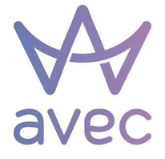

<ion-menu [content]="content" >
  <ion-header no-border>
    <ion-toolbar class="no-padding">
      <ion-title class="nav-menu">
        
      </ion-title>
    </ion-toolbar>
  </ion-header>

  <ion-content class="nav-content">
    <ion-list class="item-menu">
      <button (click)="openPage(HomePage)">
        <strong>Home</strong>
      </button>

      <button (click)="openPage(SobrePage)">
        <strong>Sobre</strong>
      </button>

      <button>
        <strong><a href="https://avecbrasil.com.br/" target="_blank">Site</a></strong>
      </button>
    </ion-list>
  </ion-content>
</ion-menu>

<!-- Disable swipe-to-go-back because it's poor UX to combine STGB with side menus -->
<ion-nav [root]="rootPage" #content swipeBackEnabled="false"></ion-nav>